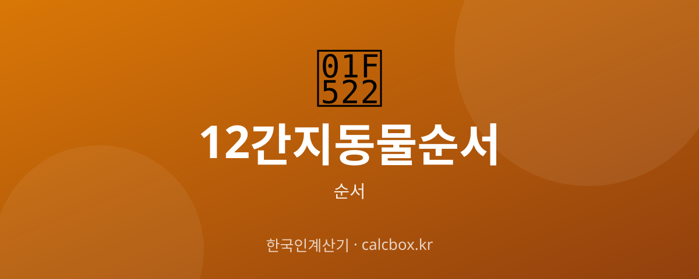

12간지 동물 순서 — 띠 동물 열두 마리 순서와 유래
'무슨 띠세요?'의 기준이 되는 12간지 동물. 쥐로 시작하는 열두 띠 동물의 순서와, 왜 그 순서가 됐는지 유래까지 정리했습니다.

12간지 동물(띠) 순서 한눈에
우리가 태어난 해로 정해지는 '띠'는 12간지에 배정된 열두 동물에서 나옵니다. 순서는 쥐 → 소 → 호랑이 → 토끼 → 용 → 뱀 → 말 → 양 → 원숭이 → 닭 → 개 → 돼지입니다.
여기서는 한자보다 동물(띠)을 중심으로 순서를 정리합니다.
12간지 동물(띠) 순서 정리
열두 띠 동물을 순서대로 정리했습니다.
- 1. 쥐(자) — 가장 앞선 띠. 꾀 많고 부지런한 동물로 여겨집니다.
- 2. 소(축) — 성실과 근면을 상징합니다.
- 3. 호랑이(인) — 용맹과 힘을 상징합니다.
- 4. 토끼(묘) — 온순함과 지혜를 상징합니다.
- 5. 용(진) — 열두 동물 중 유일한 상상의 동물로, 상서로움을 상징합니다.
- 6. 뱀(사) — 지혜와 신비를 상징합니다.
- 7. 말(오) — 활동성과 정열을 상징합니다.
- 8. 양(미) — 온화함과 평화를 상징합니다.
- 9. 원숭이(신) — 재주와 영리함을 상징합니다.
- 10. 닭(유) — 부지런함과 시간을 알리는 새벽을 상징합니다.
- 11. 개(술) — 충성과 의리를 상징합니다.
- 12. 돼지(해) — 마지막 띠. 풍요와 복을 상징합니다.
쉽게 외우는 법
'쥐-소-호-토-용-뱀-말-양-원-닭-개-돼'처럼 첫 글자를 이어 리듬으로 외우면 열두 동물이 잘 떠오릅니다.
참고사항
띠는 음력을 기준으로 하며, 새해 띠는 보통 입춘이나 설을 기준으로 바뀝니다(관점에 따라 다름). 열두 동물 중 용만 실제로 존재하지 않는 상상의 동물이라는 점이 특징입니다.
자주 묻는 질문 (FAQ)
Q. 12간지 동물 순서가 어떻게 되나요?
쥐·소·호랑이·토끼·용·뱀·말·양·원숭이·닭·개·돼지 순서입니다. 쥐로 시작해 돼지로 끝나는 열두 동물입니다.
Q. 왜 쥐가 첫 번째인가요?
옛 설화에 따르면 동물들의 경주에서 꾀 많은 쥐가 소의 등에 몰래 올라탔다가 결승선 직전에 뛰어내려 1등을 했다고 전해집니다.
Q. 열두 동물 중 상상의 동물이 있나요?
네, 다섯 번째 '용'이 유일하게 실제로 존재하지 않는 상상의 동물입니다. 나머지 열한 동물은 모두 실존하는 동물입니다.